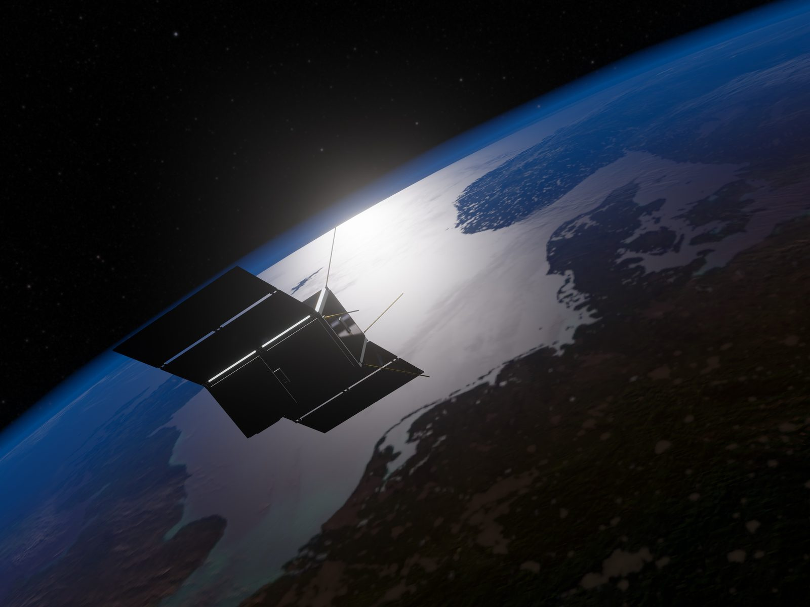
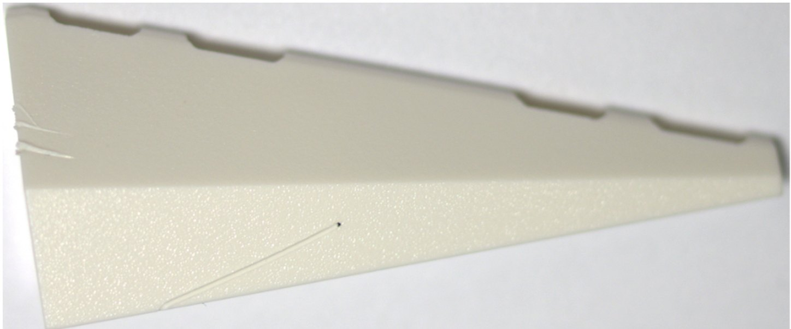
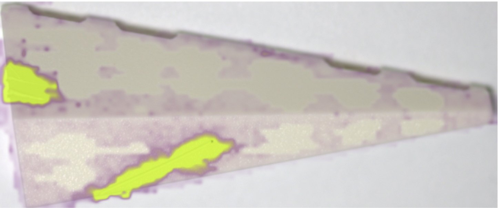
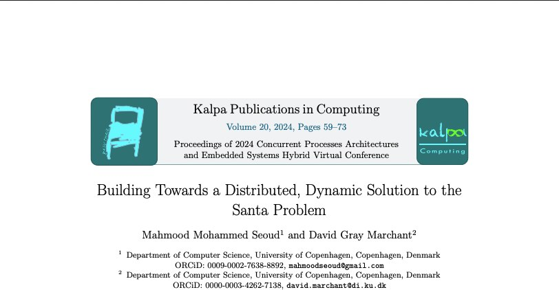
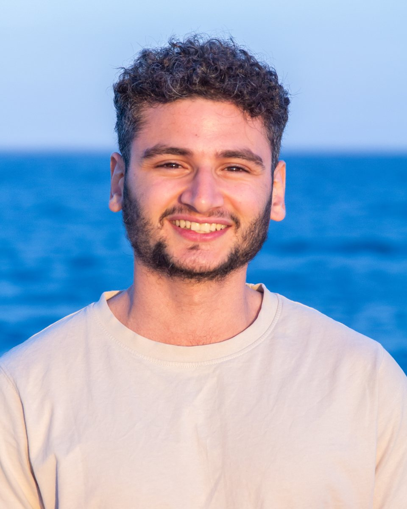

SysMentor
- What
- Simulators and digital exams for learning how computers work
- For
- Computer systems courses
- Medium
- React, WebGL
- Link
- GitHub
Computer scientist. Satellite camera software and applied AI.
Picture: DISCO-2 mission render, over the North Sea and Denmark.

One colour per photosite. Red, green, green, blue, repeated. Nobody has a picture yet.
Pull back and it is the same frame from the top of this page, with two thirds of its colour never measured.
The rest is arithmetic. Each missing value is worked out from the neighbours that did measure it, one row after another.
Getting raw BayerRG frames off a sensor and down to the ground, with telemetry, is what I write for DISCOSAT. In embedded C, for hardware nobody can reach to fix.
Simulation. The mission render is resampled to a 1280 by 960 BayerRG mosaic in your browser and rebuilt by bilinear interpolation. Not flight data, not flight code.
A camera looks at a brick. The detector marks what a person on a production line would have to squint for.


Teaching simulators, a conference paper and a chatbot that pays for itself.

5,000 DKK saved every month in operating costs.
The whole record fits on one page.
Résumé (PDF)| When | What | Where | Note |
|---|---|---|---|
| 2025 to present | Satellite Software Developer | DISCOSAT | Camera controllers for Denmark's student satellite missions. |
| August 2025 | Elite Robotics Summer School | University of Southern Denmark | Three weeks. 50 students from five continents. |
| 2024 to 2026 | MSc Computer Science | IT University of Copenhagen | Distributed systems, artificial intelligence, software engineering. |
| 2022 to present | AI Solutions Developer | PeopleNet | Built the chatbot. Led the move from Azure to the OpenAI API. |
| 2021 to 2024 | BSc Computer Science | University of Copenhagen | Thesis: Mesh Grid Networks. |

Same sensor pattern, same arithmetic. Write to me about satellites, embedded systems or applied AI.